Префектура Яманаси · Фудзикавагутико · еда и путешествия
Tabi no Eki kawaguchiko base: остановка для путешественников у озера Кавагутико
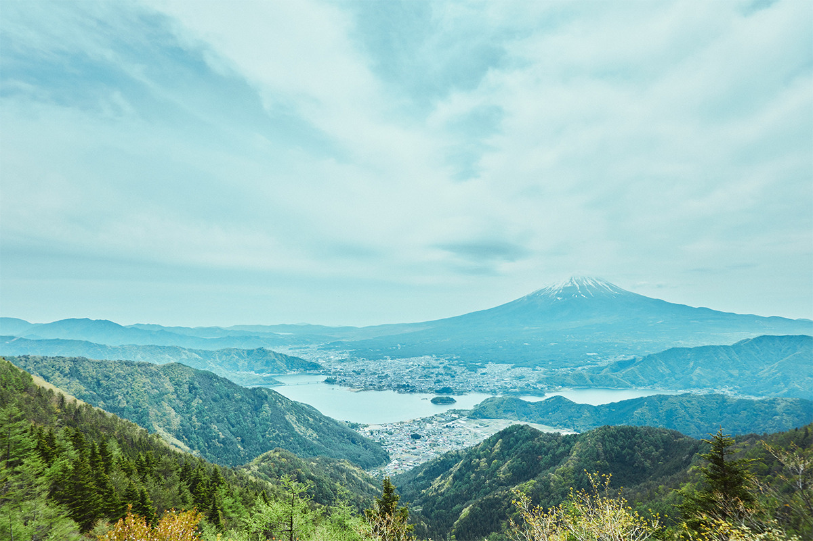
У северного подножия Фудзи, на дороге из Кофу в Фудзиёсиду, в 2022 году открылся Tabi no Eki kawaguchiko base, «станция путешествий». Здесь продают местные овощи и вино, кормят блюдами из здешних продуктов и собирают на ярмарки и мастер-классы и приезжих, и соседей.
Место
Придорожная станция нового типа
Посёлок Фудзикавагутико раскинулся вокруг озера Кавагутико у северного подножия Фудзи. Это популярный курорт: с одной стороны гора, с другой лес и вода. В 2022 году здесь открылся комплекс Tabi no Eki kawaguchiko base. Его построила местная компания, которая держит в посёлке гостиницы, и задумала его как место, где путешественник знакомится с Фудзи, Яманаси и озером.
В Японии вдоль дорог стоят «мити-но эки», придорожные станции с рынком местных продуктов и столовой. Kawaguchiko base называет себя такой станцией нового поколения. От центра Токио сюда около 90 минут на машине, а сам комплекс стоит у оживлённой трассы между Кофу и Фудзиёсидой. Он рассчитан на самых разных гостей, от иностранных туристов до тех, кто выбрался на выходные недалеко от дома. Но и для местных жителей всех возрастов он задуман как место встречи.
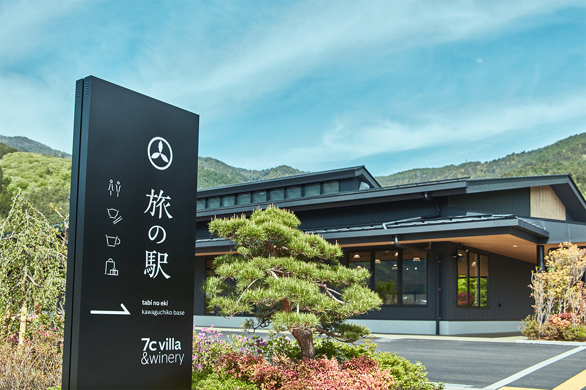
Территорию засадили деревьями и цветами. Ландшафт продумывали с расчётом на десять и двадцать лет вперёд и с заботой о природе. В разных уголках комплекса время от времени устраивают продажу овощей и фруктов, выросших в здешнем чистом климате, и знакомят гостей с жизнью у озера.
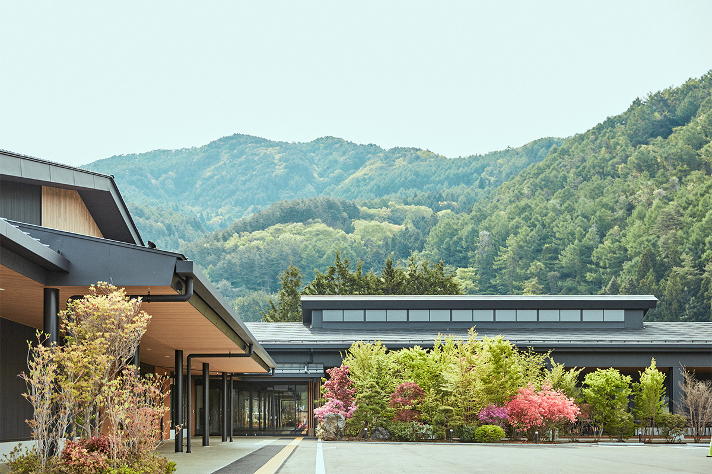
Хозяева хотят, чтобы комплекс не только собирал всё лучшее из округи, но и находил новое: бережно, пусть понемногу, показывал то, чем этот край богат давно, и то, что в нём только появляется. Рассказывать об этом предполагают так, как удобно людям сегодня, чтобы те, кто связан с посёлком, сильнее его полюбили и сами делали его лучше.
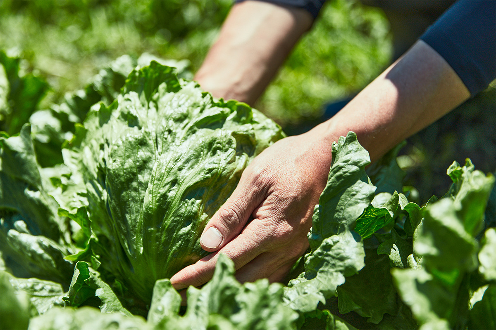
Дизайн
Герб из дубовых листьев
В логотип комплекса взяли старинный семейный герб: три листа дуба касива в кольце. Касива не сбрасывает старые листья, пока весной не появятся новые побеги, поэтому в Японии его считают знаком непрерывного рода. Так в герб вложили пожелание, чтобы дело жило долго.
Буквы названия нарисованы на основе мягкого шрифта с засечками, похожего на письмо тушью и кистью. Каждую деталь знаков выверили отдельно, и логотип получился тёплым. Его создал глава дизайн-студии artless, которая отвечает и за весь облик комплекса.
Рынок
asama market: больше 2000 товаров
На участке больше 4000 цубо, около 13 000 квадратных метров, и у комплекса три главные части: магазин местных продуктов, ресторан и площадки для событий. Вместе они позволяют за один заезд увидеть озеро Кавагутико с самых разных сторон.
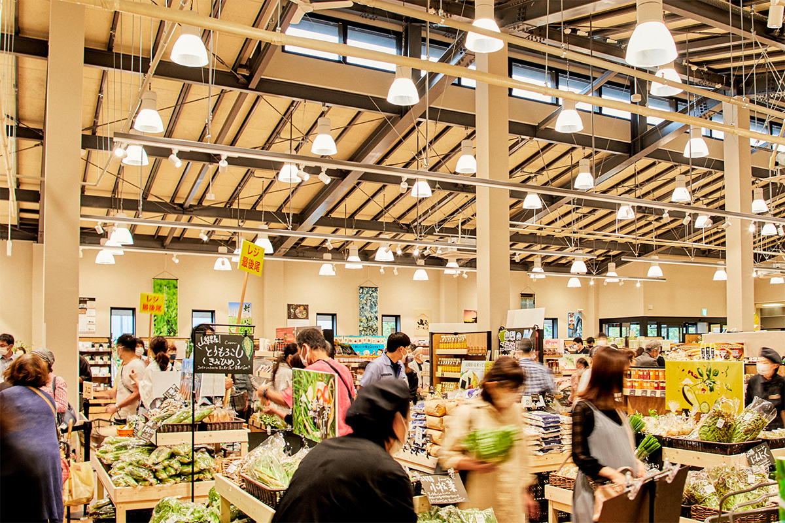
Сердце комплекса это рынок asama market. Здесь больше 2000 наименований, и каждое отбирали ради настоящего вкуса: овощи и фрукты, выросшие у подножия Фудзи, сезонные заготовки местных фермеров, продукты старых известных домов и то, что начали делать здесь молодые производители. В одном углу собраны вина, в основном из префектуры Яманаси. Вина известных виноделен можно попробовать и только потом купить.
Свой новый магазин открыла здесь пекарня «Санкуру», которую у подножия Фудзи любят уже 70 лет. Каждый день она печёт и привычный хлеб, и новые, более изысканные изделия.
Рынок задумал и собственную марку: продукты с настоящим вкусом, связанные с этими местами. Кроме вкуса для неё важно, чтобы через работу мастеров были связаны люди, край и общество.
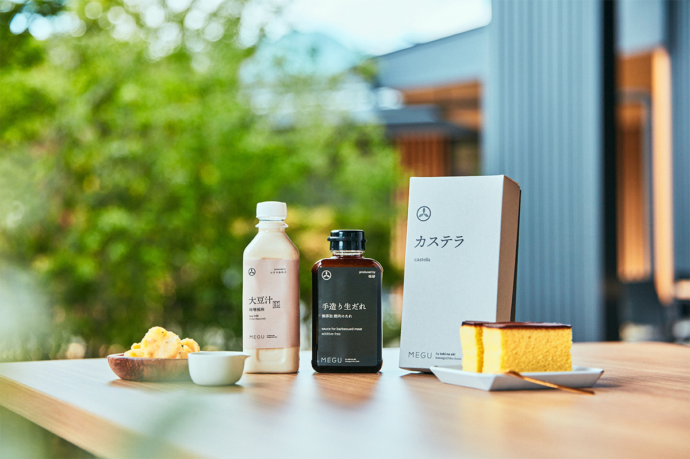
Ресторан
terrace kitchen: вкус здешнего стола
Ресторан terrace kitchen готовит авторские блюда на основе того, чем гордятся в этих краях. Подсказки повара берут не только из известных местных блюд, но и из домашних рецептов, привычной еды и праздничного стола. Есть можно в светлом зале или на большой открытой террасе.
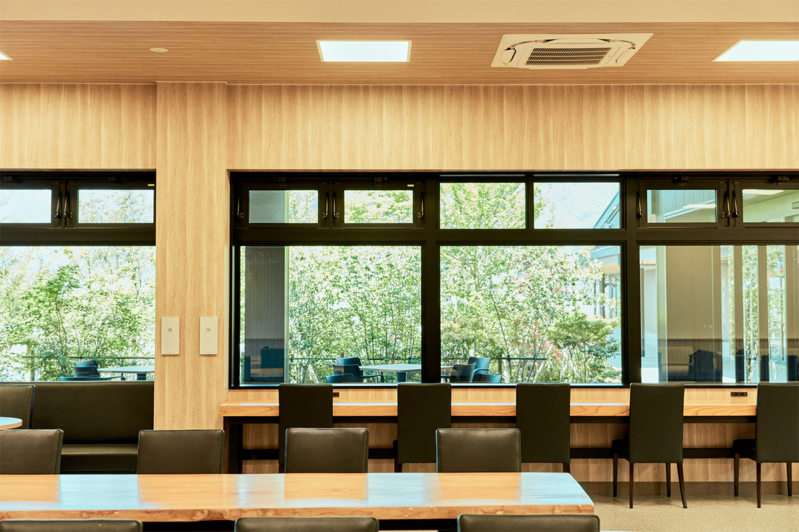
Здесь же проводят гастрономические события и мастер-классы, чтобы из этих мест вырастала своя кухня.
У ресторана есть и задача для всего посёлка. У озера Кавагутико много небольших гостиниц, и во многих гостям не подают еду. Поэтому в 2022 году комплекс собирался кормить завтраком и тех, кто остановился без питания: и гостей гостиниц своей компании, и постояльцев других хозяев, вместе с которыми он хотел наладить такую услугу.
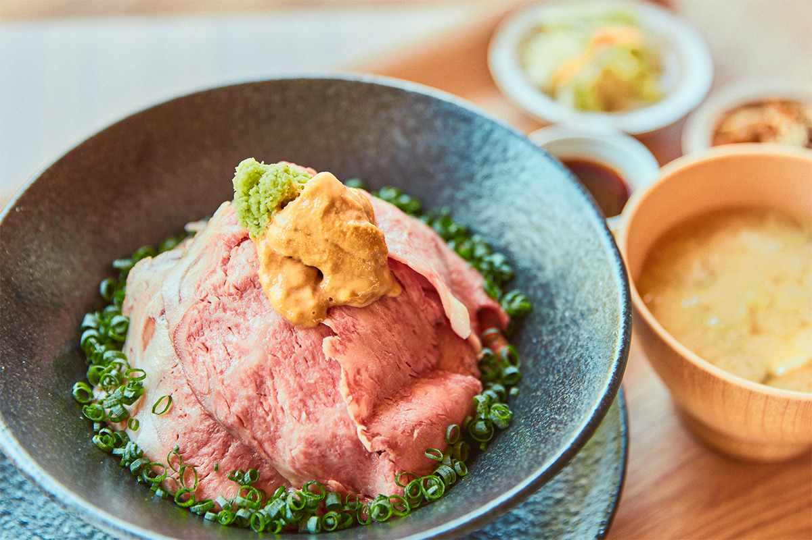
События
Ярмарки и мастер-классы
В комплексе регулярно проходят события, где можно знакомиться и учиться: ярмарки под открытым небом, мастер-классы и открытые лекции. На временных ярмарках на улице работают поп-ап-лавки с едой и вещами, кофейные стойки и блошиный рынок. Для зала в 2022 году готовили «мастер-классы для взрослых» без особой подготовки: например, о лечебной кухне с травами или о закусках к вину.
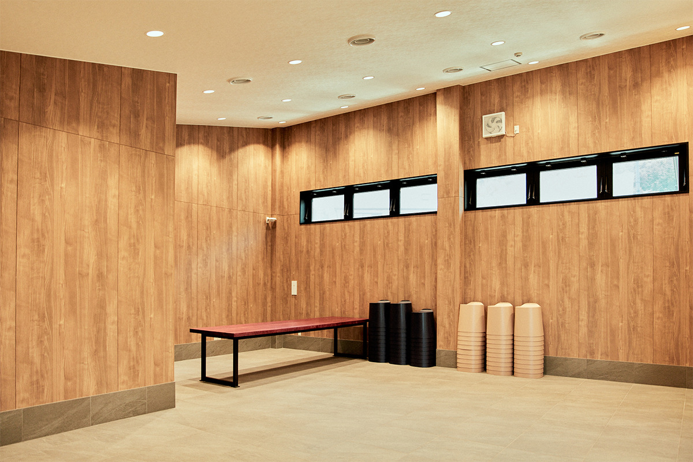
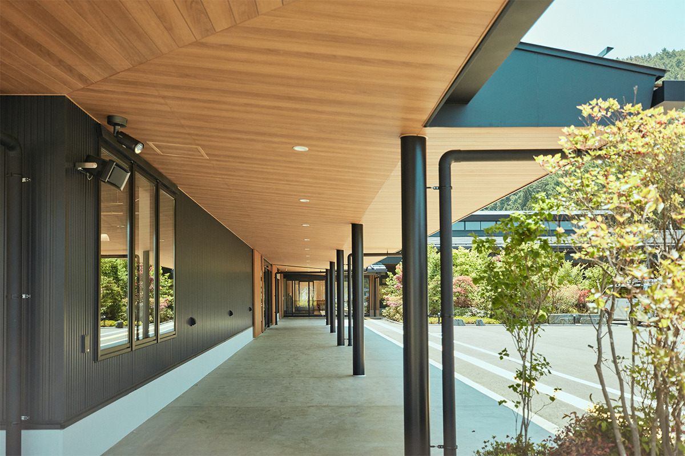
Планы
Винодельня и ночлег по соседству
Комплекс задумывали как центр всего северного берега озера Кавагутико. На его участке и рядом в 2022 году готовили ещё несколько мест. В августе 2022 года должна была открыться первая в посёлке винодельня, где вино делают малыми партиями винодел и виноградари, каждый со своим характером. На весну 2023 года были намечены винный магазин с рестораном, где это вино подают с местными продуктами, и глэмпинг, чтобы никуда не спешить за бокалом.
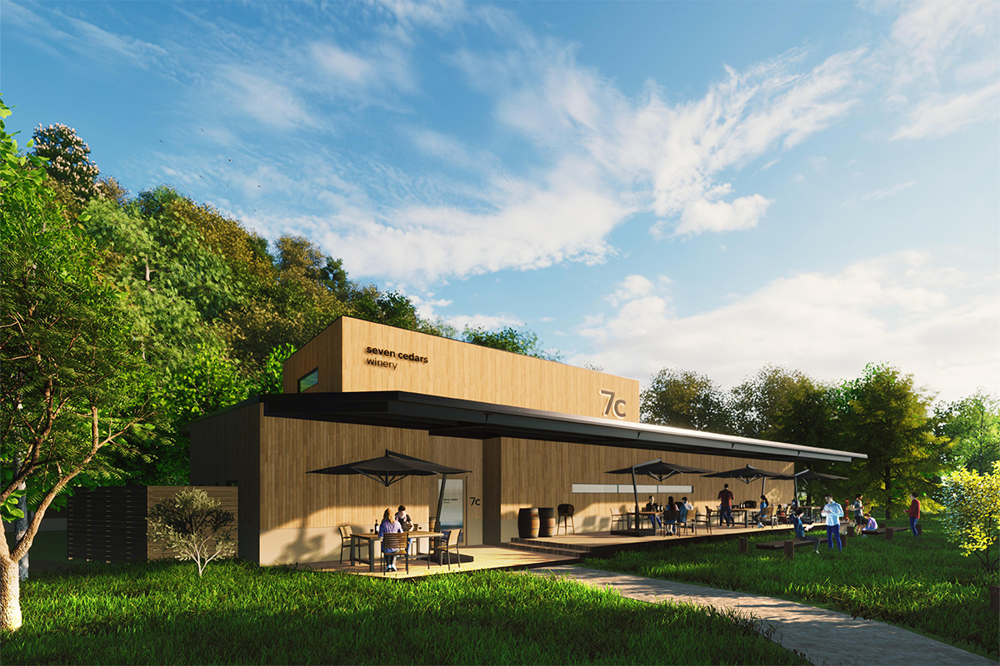
Комплекс окружён лесом и горами, и сюда стоит заехать, чтобы почувствовать, чем живут эти места.
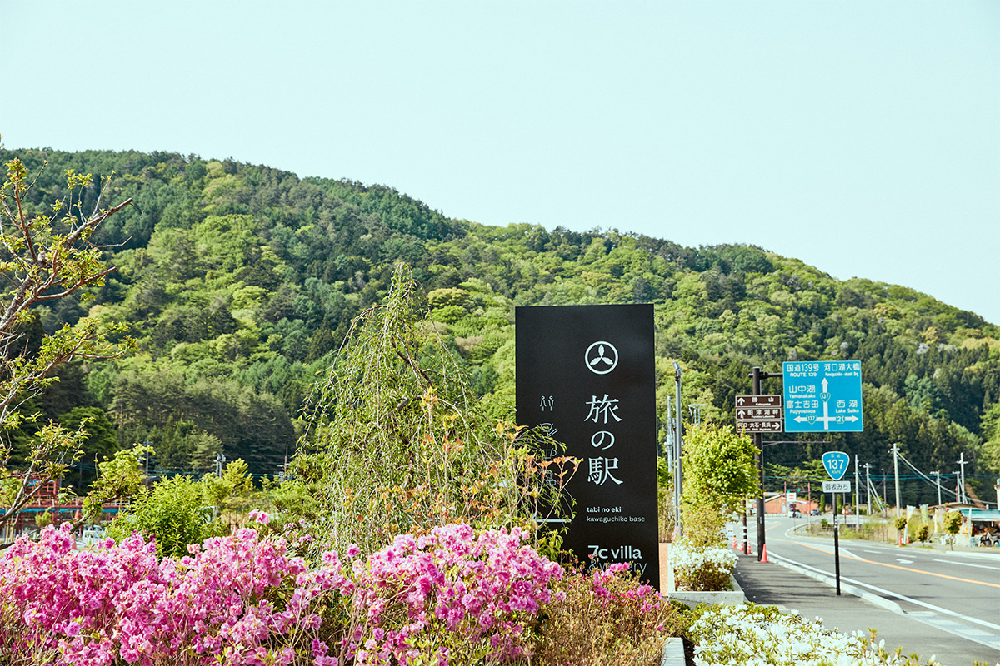
Tabi no Eki kawaguchiko base
- Адрес
- префектура Яманаси, уезд Минамицуру, посёлок Фудзикавагутико, Кавагути, 521-4
- Часы работы
- 9:00–17:00